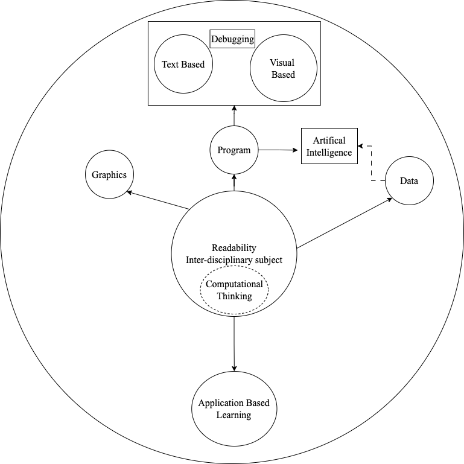
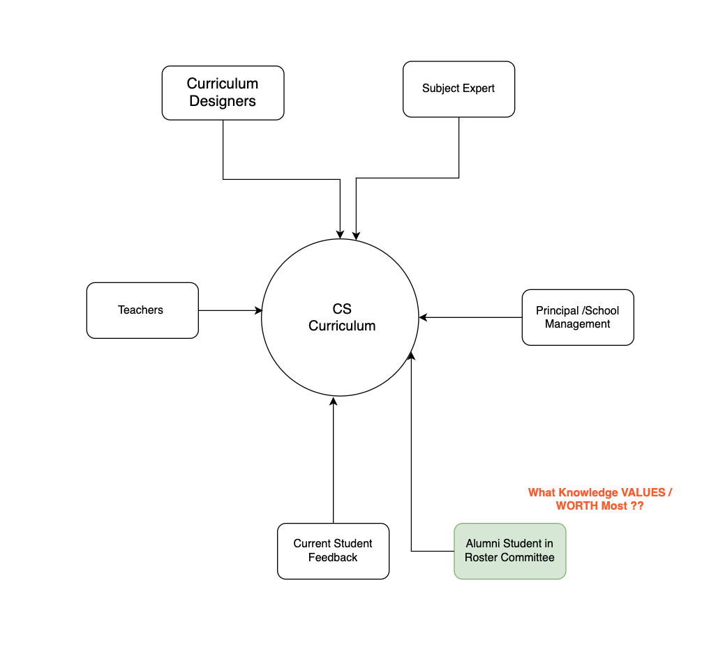
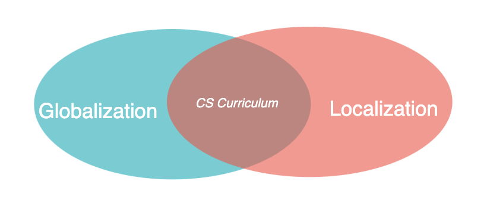
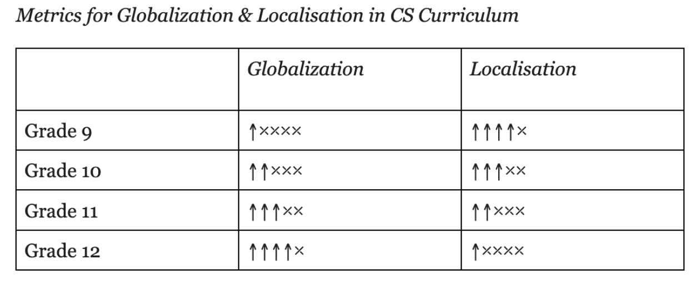
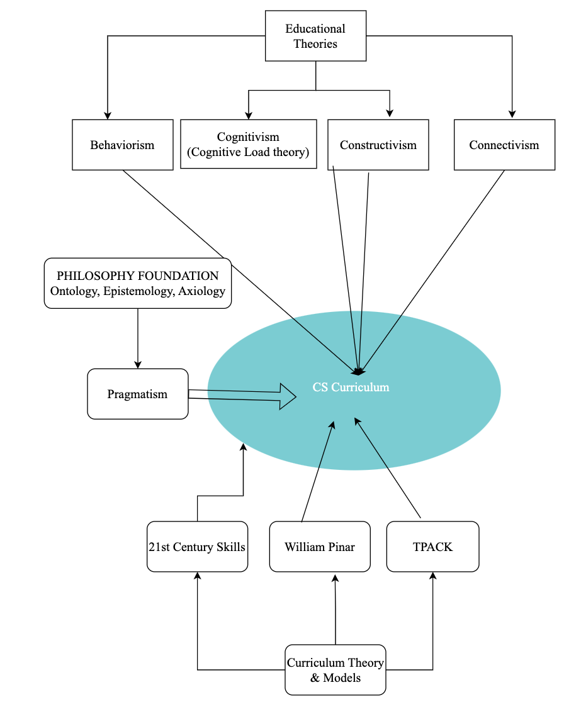
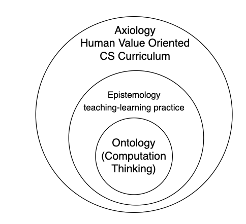
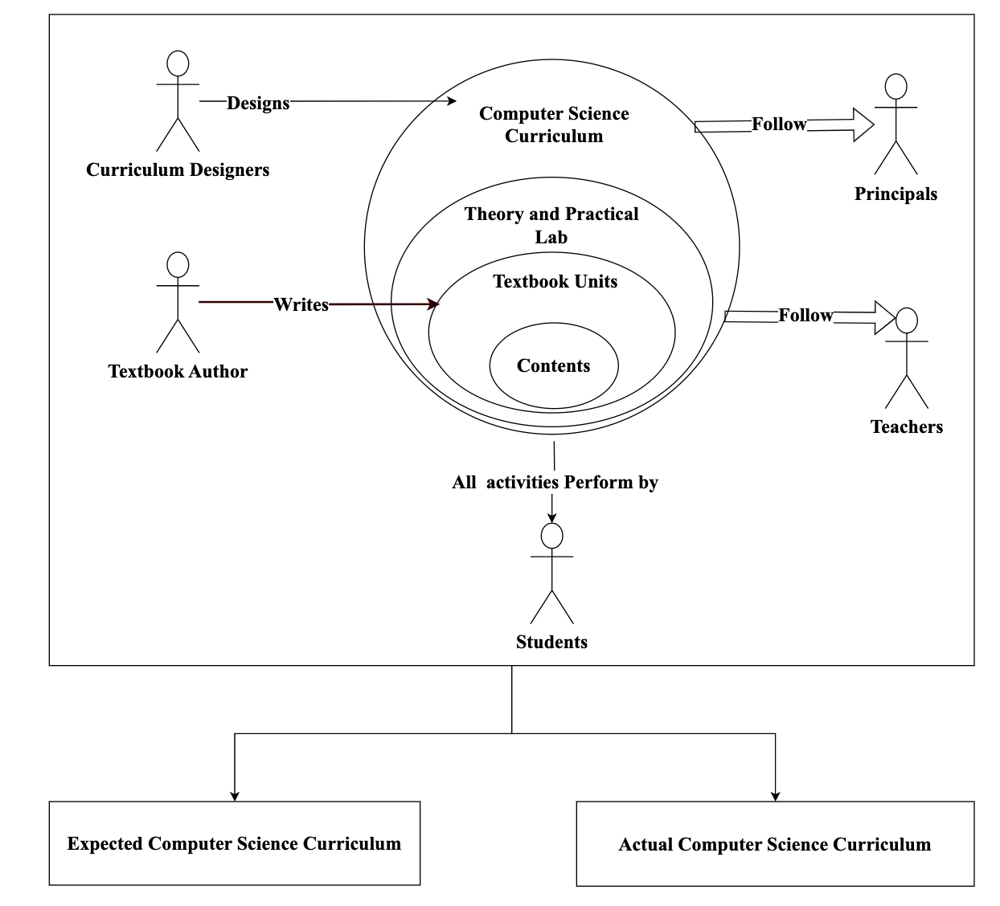

Computer Science Curriculum
Contextualizing Computer Science curriculum.
Local context curriculum and the skills students need beyond school.
Research and curriculum improvement
My MPhil research explored computer science curriculum through teachers' and students' perspectives, with attention to curriculum content, practical work, and opportunities for improvement in the Nepalese context.
The research examined the relationship between curriculum intentions and learning experiences. It considered how subject balance, teaching approaches, practical access, and links to everyday life can influence students' experience of computer science.
Key Questions
- Does the curriculum provide a balanced foundation in concepts, practices, and applications?
- How do students and teachers experience the curriculum in real classrooms?
- Are learning activities connected to local contexts and students' interests?
- How can computational thinking and AI literacy be incorporated responsibly?
- What professional support do teachers need to implement curriculum goals?
Philosophy of Computer Science Curriculum at Secondary School
Computer Science Curriculum requires integration of:
- Ontologically - Computational Thinking ,Mathematics, Arts, and Literature
- Epistemologically - Pedagogy for Practical knowledge and Skills
- Axiologically - Ethics and Value Oriented towards Society
Computer Science Curriculum requires focus of
- Unplugged Programming / Computational Thinking
- 21st Century Skills
- Exploratory Learning
- Student-Centric Curriculum & Textbook
Computer Science Curriculum Development Model
This Model is a guide map tool for developing the Student-Centric Computer Science curriculum at Secondary School Level (grades 9 to 12).
Computational thinking is the core source of Computer Science discipline. The objective
of computational
thinking is to solve problems in an algorithmic way. Computation thinking is required to be taught in an
unplugged programming way which does not require a physical Computer device.
As Computer Science is a technological advancement subject, thus the curriculum is required
to include
examples from interdisciplinary horizontal and vertical subjects. The Flesch-Kincaid readability tool helps to
judge the language of a textbook as per grade standard. The curriculum designers can use several readability
tools within their social context that help to standardize the textbook as per student ability.
The learning should be exploratory based on student individual interest ability. The
student interested in
drawing arts can choose graphics areas, and block based programming to explore CS concepts. Similarly,
students interested in Mathematics and problem solving can explore the text-based Programming areas. The
students interested in content creations can explore data areas. Artificial Intelligence tools are widely used
that consume the data generated by users. Various AI models are used to solve the problem specific tasks.

Computer Science Curriculum Development Model:
Core Components:
- Unplugged Programming / Computational Thinking
- Inter-disciplinary Subject Integration - Horizontally and Vertically
- Readablity Tool - Flesch Reading Ease, Flesch-Kincaid Grade Level
Technical Subject Areas:
- Graphics - Image, Audio, Video, Animations
- Program - Block-Based / Text-Based
- Data / Content Generations
- Aritifical Intelligence Models
- Application Based Exploratory Learning
Expanded Form of the Curriculum Development Model

Committee Member for Computer Science Curriculum
For Student-Centric curriculum, the committee members requires to include educational stakeholders
- Student presently attending session - Learning Practice
- Alumni Students - Application of Knowledge
- Curriculum Designers - Emphasis on End-Users (Teachers / Student) stakeholders
- Principal - Resources required for CS subject
- Subject Expert - Textbook writers to create the Student Engaging contents

Curriculum Balance Approach for Globalized and Localized Contents
The balanced curriculum includes both localized and gobalized learning resources. The balanced curriculum includes both localized and globalized learning resources. Localized learning resources help students to understand and implement concepts in a practical way with the facility of adequate resources in their areas. The globalized learning resources will help to standardize the curriculum standard across the globe that promotes innovation and knowledge sharing.

Curiculum Weightage for Localized and Globalized Contents
This weightage would help to structure the CS curriculum by including both localized and globalized learning resources. The localized learning resources decrease with the upper grade's and proportionately increase the globalized learning resources.

Note: 15% weightage value to each Arrow
Educational Theories
- Behaviorism learning theory is related to reward and punishment. with rewards, the reinforcement is granted to the learner.
- Cognitivism helps to generate learning resources as per student interest and ability. Each Student is different and subject to study. Teachers can use Cognitivism theory in relation to student ability to comprehend learning resources.
- Learners construct knowledge by exploring and reading on topics. Each student has different experiences to construct knowledge based on their belief and experiences.
- Connectivism theory is related to the global abundance of data, information and knowledge available in internet resources. Students are encouraged to write blogs, participate in forums, and share their understanding and experience on digital forums.

Philosophical Foundation

- Ontology: Root / Source
- Epistemology: Nature of knowledge Perceived
- Axilogy: Ethics & Values
Further Research: Curriculum for Computer Science

Computer Science Curriculum
